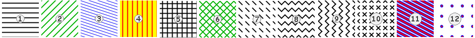

com.jidesoft.chart.style.StripePaint
com.jidesoft.chart.style.StripePaint
|
JIDE 3.3.3 | ||||||||
| PREV CLASS NEXT CLASS | FRAMES NO FRAMES | ||||||||
| SUMMARY: NESTED | FIELD | CONSTR | METHOD | DETAIL: FIELD | CONSTR | METHOD | ||||||||
java.lang.Object
public class StripePaint
StripePaint is a class for creating striped patterns. These patterns can be used for filling other shapes; in particular, they are excellent for filling the bars of a bar chart.
The basic idea is that you create a stripe
by specifying an angle for a line (either as an int for degrees or as a double for radians), along with the size of
the tile in the repeated pattern. The class then constructs the tile that is used in the Paint fill. You
can specify the foreground color for the line and the background color for the rest of the tile. You can also specify
a Stroke to use for the line to give a dotted stripe effect.
For more complex patterns you can use a Paint as
the background of the tile instead of a Color. This means you can use a StripePaint as the background to
a StripePaint and build up a layered stripe pattern. By careful use of this feature you can create zig-zag patterns,
cross-hatches, crosses, and multi-coloured stripes. Finally, you can also create a polka-dot paint effect by setting
the dashes of your BasicStroke to have a length of zero and a round cap. The diameter of the dots is the same as the
line width. This too, can be used as part of a layered effect - in the example below the background polka-dot layer
has larger dots than the foreground layer, allowing us to create a polka-dot effect with concentric circles.
Here are some sample paint patterns generated using StripePaint:
The number labels on the patterns indicate which of the code fragments from the table (below) can be used to generate it:
| Pattern | Code to Generate It |
|---|---|
| 1 | new StripePaint(0, 10, 2f) |
| 2 | StripePaint paint = new StripePaint(-45, 20,
2f); paint.setForeground(Color.green.darker()); |
| 3 | StripePaint paint = new StripePaint(20, 20, 1f); paint.setForeground(Color.blue); |
| 4 | StripePaint paint = new StripePaint(90, 10,
2f); paint.setBackground(Color.yellow); paint.setForeground(Color.red); |
| 5 | StripePaint background = new StripePaint(0, 10, 2f); StripePaint paint = new StripePaint(90, 10, 2f); paint.setBackground(background); |
| 6 | StripePaint background = new StripePaint(-45, 20, 2f); background.setForeground(Color.green.darker()); StripePaint paint = new StripePaint(45, 20, 2f); paint.setBackground(background); paint.setForeground(Color.green.darker()); |
| 7 | new StripePaint(45, 20, new BasicStroke(2f, BasicStroke.CAP_ROUND, BasicStroke.JOIN_MITER, 10f, new float[] {10f, 10f}, 0f)); |
| 8 | StripePaint background = new StripePaint(45, 20, new BasicStroke(2f, BasicStroke.CAP_ROUND,
BasicStroke.JOIN_MITER, 10f, new float[] {10f, 10f}, 0f)); StripePaint paint = new StripePaint(-45, 20, new BasicStroke(2f, BasicStroke.CAP_ROUND, BasicStroke.JOIN_MITER, 10f, new float[] {10f, 10f}, 10f)); paint.setBackground(background); |
| 9 | StripePaint
background = new StripePaint(45, 20, new BasicStroke(2f, BasicStroke.CAP_ROUND, BasicStroke.JOIN_MITER, 10f, new
float[] {10f, 10f}, 0f)); StripePaint paint = new StripePaint(-45, 20, new BasicStroke(2f, BasicStroke.CAP_ROUND, BasicStroke.JOIN_MITER, 10f, new float[] {10f, 10f}, 0f)); paint.setBackground(background); |
| 10 | StripePaint background = new StripePaint(45, 20, new
BasicStroke(2f, BasicStroke.CAP_ROUND, BasicStroke.JOIN_MITER, 10f, new float[] {10f, 10f}, 5f)); StripePaint paint = new StripePaint(-45, 20, new BasicStroke(2f, BasicStroke.CAP_ROUND, BasicStroke.JOIN_MITER, 10f, new float[] {10f, 10f}, 5f)); paint.setBackground(background); |
| 11 | StripePaint background = new StripePaint(30, 20, 6f); background.setForeground(Color.blue); StripePaint paint = new StripePaint(30, 20, 3f); paint.setBackground(background); paint.setForeground(Color.red); |
| 12 | StripePaint background = new StripePaint(45, 30, new BasicStroke(6f, BasicStroke.CAP_ROUND,
BasicStroke.JOIN_ROUND, 5f, new float[] {0f, 30f}, 15f)); background.setForeground(Color.blue); StripePaint paint = new StripePaint(45, 30, new BasicStroke(3f, BasicStroke.CAP_ROUND, BasicStroke.JOIN_ROUND, 5f, new float[] {0f, 30f}, 15f)); paint.setForeground(Color.red); paint.setBackground(background); |
| Field Summary |
|---|
| Fields inherited from interface java.awt.Transparency |
|---|
BITMASK, OPAQUE, TRANSLUCENT |
| Constructor Summary | |
|---|---|
StripePaint(double angleRadians,
int segmentLength)
Creates a stripe paint that can be used to fill shapes |
|
StripePaint(double angleRadians,
int segmentLength,
BasicStroke stroke)
Creates a Stripe paint that can be used to fill shapes |
|
StripePaint(double angleRadians,
int segmentLength,
float lineWidth)
Creates a stripe paint that can be used to fill shapes |
|
StripePaint(int angleDegrees,
int segmentLength)
Creates a stripe paint that can be used to fill shapes |
|
StripePaint(int angleDegrees,
int segmentLength,
BasicStroke stroke)
Creates a stripe paint that can be used to fill shapes |
|
StripePaint(int angleDegrees,
int segmentLength,
float lineWidth)
Creates a stripe paint that can be used to fill shapes |
|
| Method Summary | |
|---|---|
PaintContext |
createContext(ColorModel cm,
Rectangle deviceBounds,
Rectangle2D userBounds,
AffineTransform xform,
RenderingHints hints)
|
Paint |
getBackground()
Returns the background colour of the paint |
Color |
getForeground()
Returns the foreground colour of the paint |
int |
getTransparency()
|
void |
setBackground(Paint background)
Specify the background colour of the paint |
void |
setForeground(Color foreground)
Specify the foreground colour to use in the paint |
| Methods inherited from class java.lang.Object |
|---|
clone, equals, finalize, getClass, hashCode, notify, notifyAll, toString, wait, wait, wait |
| Constructor Detail |
|---|
public StripePaint(double angleRadians,
int segmentLength)
angleRadians - the angle in radians of the line of the stripesegmentLength - the length of the line segment, used to calculate the size of the paint tile and therefore
also the separation between the stripes
public StripePaint(int angleDegrees,
int segmentLength)
angleDegrees - the angle in degrees of the line of the stripesegmentLength - the length of the line segment, used to calculate the size of the paint tile
public StripePaint(int angleDegrees,
int segmentLength,
float lineWidth)
angleDegrees - the angle in degrees of the line of the stripesegmentLength - the length of the line segment, used to calculate the size of the paint tilelineWidth - the width of the line
public StripePaint(double angleRadians,
int segmentLength,
float lineWidth)
angleRadians - the angle in radians of the line of the stripesegmentLength - the length of the line segment, used to calculate the size of the paint tilelineWidth - the width of the line
public StripePaint(int angleDegrees,
int segmentLength,
BasicStroke stroke)
angleDegrees - the angle in degrees of the line of the stripesegmentLength - the length of the line segment, used to calculate the size of the paint tilestroke - the stroke of the line
public StripePaint(double angleRadians,
int segmentLength,
BasicStroke stroke)
angleRadians - the angle in radianssegmentLength - the length of the line segment, used to calculate the size of the paint tile and therefore
also the separation between the stripesstroke - the stroke to use when painting the line| Method Detail |
|---|
public Paint getBackground()
public void setBackground(Paint background)
background - the background colour of the paintpublic Color getForeground()
public void setForeground(Color foreground)
foreground - the foreground colour of the paintpublic int getTransparency()
getTransparency in interface Transparency
public PaintContext createContext(ColorModel cm,
Rectangle deviceBounds,
Rectangle2D userBounds,
AffineTransform xform,
RenderingHints hints)
createContext in interface Paint
|
JIDE 3.3.3 | ||||||||
| PREV CLASS NEXT CLASS | FRAMES NO FRAMES | ||||||||
| SUMMARY: NESTED | FIELD | CONSTR | METHOD | DETAIL: FIELD | CONSTR | METHOD | ||||||||